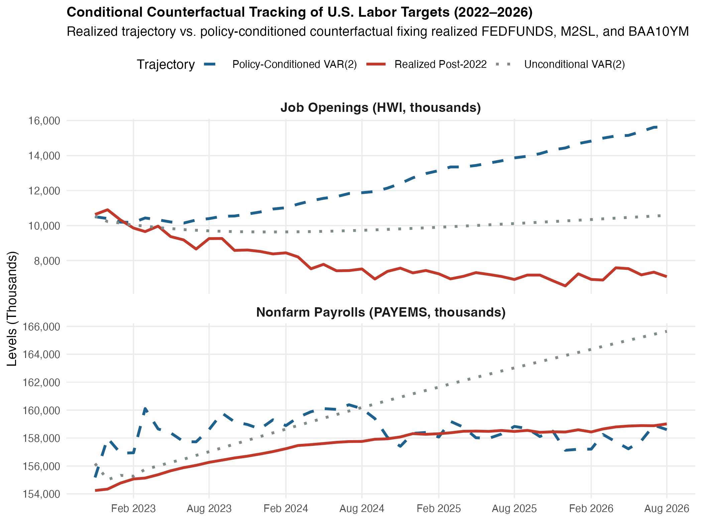

1. Research Question & Motivation
“Does the systematic forecast error in U.S. employment (PAYEMS) and job openings (HWI) post-2022 reveal a structural break attributable to the generative AI shock, and how do classical Bayesian VARs compare to modern deep learning and zero-shot foundation models in isolating this effect?”
The public release of generative AI in late 2022 coincided directly with the Federal Reserve’s monetary tightening cycle, creating an acute identification challenge in separating technological labor displacement from policy-induced economic cooling. Because simple intervention dummies fail to disentangle simultaneous macroeconomic shocks, a multivariate conditional forecasting framework is required to hold monetary policy and financial conditions fixed along their realized post-2022 paths (Waggoner & Zha, 1999; Bańbura, Giannone, & Lenza, 2015; Crump et al., 2021; Caldara et al., 2023).
Recent empirical evidence shows that post-pandemic monetary transmission exhibits pronounced nonlinearities and structural shifts across labor and price dynamics (Eksi & Tas, 2022; Debortoli et al., 2023; Korobilis, 2025), while jointly tracking job openings and aggregate employment distinguishes structural matching shocks from aggregate demand contractions (Pater, 2017). Benchmarking Bayesian VARs with shrinkage or time-varying priors (Primiceri, 2005; Sznajderska & Haug, 2023) against deep learning and zero-shot time-series foundation models (Ansari et al., 2024) tests whether data-driven architectures filter macro-financial noise more effectively without rigid linear restrictions.
2. Data & Macro-Financial System
We analyze \(k = 6\) monthly series from the Federal Reserve Bank of St. Louis FRED-MD database (McCracken & Ng, 2016), implemented in Python and R. Under standard monetary transmission, tightening in the federal funds rate (FEDFUNDS) and broad liquidity (M2SL) widens corporate credit spreads (BAA10YM), which depresses industrial output (INDPRO) with a lag; firms adjust first by freezing vacancies (HWI) before reducing total nonfarm payrolls (PAYEMS). Modeling all six series jointly is therefore essential to separate endogenous monetary cooling from any exogenous generative AI shock.
| Mnemonic | Series Description & Units | Role | Transform (tcode) |
Mean | SD | Pre-AI Mean | Post-AI Mean |
|---|
Notes: Sample spans January 2010 – September 2026 (\(T = 201\); training window Jan 2010 – Oct 2022, \(T_{\text{train}} = 154\); evaluation window Nov 2022 – Sep 2026, \(T_{\text{test}} = 47\), one month ahead of the Oct 2026 proposal target \(T = 202\)). BAA10YM is computed from FRED-MD as BAA − GS10; HWI has one trailing release lag at 2026-09-01. Transformation codes follow McCracken & Ng (2016).
3. Empirical Exploration
PAYEMS rose by +3.3% (153.9M to 159.0M) whereas HWI declined by −32.2% (10,447 to 7,079).
4. Econometric & Learning-Based Methodology
Let \(\mathbf{y}_t = (\text{FEDFUNDS}_t,\, \text{M2SL}_t,\, \text{BAA10YM}_t,\, \text{INDPRO}_t,\, \text{HWI}_t,\, \text{PAYEMS}_t)^\top \in \mathbb{R}^6\). All candidate models are estimated strictly on the pre-2022 training sample (\(t = 1, \dots, T_{\text{train}}\)) and evaluated out of sample over the post-2022 horizon (\(h = 1, \dots, T_{\text{test}}\)).
Here \(\mathcal{C} = \{\text{FEDFUNDS}, \text{M2SL}, \text{BAA10YM}\}\) denotes the conditioning block fixed along its realized post-2022 trajectory via Waggoner & Zha (1999) conditional forecasting (or supplied as known future covariates in the neural architecture). Systematic negative conditional forecast errors \(e_{i, T_{\text{train}}+h}\) that fall outside posterior uncertainty bands represent labor-market shortfalls unexplained by monetary tightening.
| Model | Class | Post-2022 Conditioning | Specification, Identification & Tuning |
|---|---|---|---|
| Unrestricted VAR(\(p\)) | Classical | Unconditional | Stationary FRED-MD baseline; lag order \(p\) selected via BIC. |
| Bayesian VAR (BVAR) | Classical | Waggoner–Zha (\(\mathcal{C}\) fixed) | Minnesota shrinkage priors; Cholesky IRFs to verify monetary transmission; conditional posterior bands for PAYEMS and HWI. |
| TFT / LSTM | Deep Learning (Trained) | Known future covariates (\(\mathcal{C}\)) | Trained on 2010–2022 multivariate series; hidden layers, learning rate, and dropout tuned via time-series cross-validation. |
| Chronos / TimesFM | Foundation (Zero-Shot) | Pre-2022 context only | Pretrained model (Ansari et al., 2024) evaluated zero-shot to benchmark structural-break handling without parametric restrictions. |
5. Empirical Findings & Newey–West HAC Structural Break Evaluation
Following Waggoner & Zha (1999) exact structural conditional forecasting, the baseline VAR(2) estimated strictly on the pre-AI training sample (2010M1–2022M10) was conditioned on the realized post-2022 paths of the policy and financial block \(\mathcal{C} = \{\text{FEDFUNDS}, \text{M2SL}, \text{BAA10YM}\}\). Systematic forecast errors over the 46-month out-of-sample evaluation window (November 2022 to August 2026) were tested for non-zero means via Newey–West (1987) HAC standard errors with Bartlett kernel bandwidth \(b = 3\).
| Target Variable & Model Regime | Mean Error (\(\bar{e}\)) | HAC Std. Error | \(t\)-ratio | \(p\)-value | RMSE | Empirical Finding |
|---|---|---|---|---|---|---|
| Job Openings (HWI, Thousands of Openings) | ||||||
| Unconditional VAR(2) Baseline | −76.14 | 29.79 | −2.556 | 0.014 | 347.16 | Significant Overprediction |
| Policy-Conditioned VAR(2) (Waggoner–Zha) | −186.27 | 32.51 | −5.729 | 7.87 × 10−7 | 387.95 | Acute Structural Collapse (\(p < 10^{-6}\)) |
| Total Nonfarm Payrolls (PAYEMS, Monthly % Growth) | ||||||
| Unconditional VAR(2) Baseline | −0.089% | 0.021% | −4.161 | 0.00014 | 0.246% | Unconditional Overprediction |
| Policy-Conditioned VAR(2) (Waggoner–Zha) | +0.006% | 0.067% | +0.085 | 0.933 | 0.586% | Zero Structural Break (\(p = 0.933\)) |

FEDFUNDS, M2SL, and BAA10YM (blue dashed) and unconditional VAR(2) forecast (gray dotted). Conditioning on monetary policy fully aligns aggregate employment (PAYEMS), while widening the unexplained collapse in job openings (HWI).

(a) Orthogonalized IRFs with 95% bootstrap CIs (24-month horizon)

(b) Cholesky ordering invariance check (Enders 2015, p. 298)

6. References
- Ansari, A. F., et al. (2024). Chronos: Learning the language of time series. arXiv preprint arXiv:2403.07815.
- Bańbura, M., Giannone, D., & Lenza, M. (2015). Conditional forecasts and scenario analysis with vector autoregressions for large cross-sections. International Journal of Forecasting, 31(3), 739–756.
- Caldara, D., Scotti, C., & Zhong, M. (2023). Macroeconomic and financial risks: A tale of mean and volatility. Board of Governors of the Federal Reserve System Working Paper.
- Crump, R. K., Eusepi, S., Giannone, D., Qian, E., & Sbordone, A. M. (2021). A large Bayesian VAR of the United States economy. Federal Reserve Bank of New York Staff Reports, (976).
- Debortoli, D., Forni, M., Gambetti, L., & Sala, L. (2023). Asymmetric monetary policy tradeoffs. BSE Working Paper, 1404.
- Eksi, O., & Tas, B. K. O. (2022). Time-varying effect of uncertainty shocks on unemployment. Economic Modelling, 110, 105810.
- Korobilis, D. (2025). Exploring monetary policy shocks with large-scale Bayesian VARs. arXiv preprint arXiv:2505.06649.
- McCracken, M. W., & Ng, S. (2016). FRED-MD: A monthly database for macroeconomic research. Journal of Business & Economic Statistics, 34(4), 574–589.
- Pater, R. (2017). Is there a Beveridge curve in the short and the long run? Journal of Applied Economics, 20(2), 283–303.
- Primiceri, G. E. (2005). Time varying structural vector autoregressions and monetary policy. The Review of Economic Studies, 72(3), 821–852.
- Sznajderska, A., & Haug, A. A. (2023). Bayesian VARs of the U.S. economy before and during the pandemic. Eurasian Economic Review, 13, 255–280.
- Waggoner, D. F., & Zha, T. (1999). Conditional forecasts in dynamic multivariate models. The Review of Economics and Statistics, 81(4), 639–651.
@misc{kalarica2026generative,
author = {Kal Ar{\i}ca, Eda and {\c{S}}ekerci, Esra},
title = {Monetary Tightening or Generative AI? Isolating Post-2022 U.S. Labor Shocks via Conditional Forecasting},
year = {2026},
month = nov,
url = {https://esrasekerci.github.io/generative_ai_labor_shock/}
}